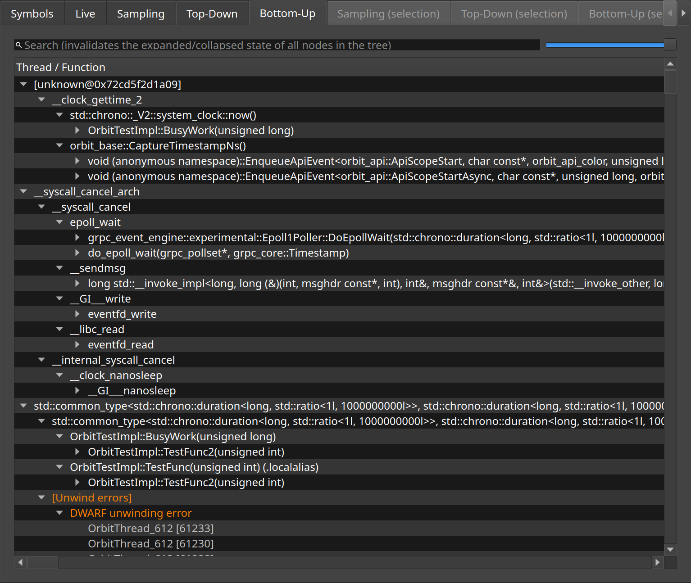

Bottom-up
The same callstacks merged from the leaves, to find who calls a hot function.
The bottom-up view starts from the functions samples landed in and walks back towards the callers. Where the top-down view answers what a thread is doing, this one answers why a particular function is being called so much, and from where.
